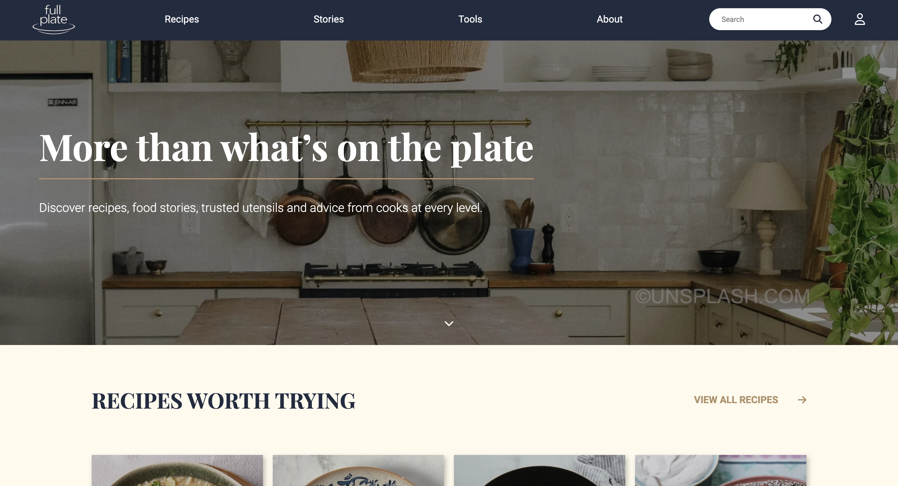
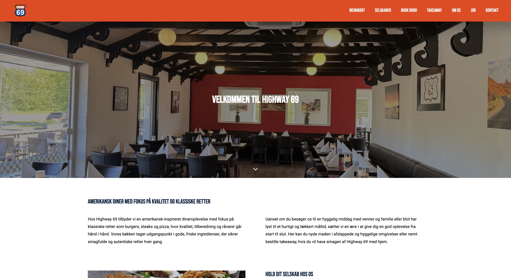

Mine projekter
Her finder du alle mine projekter – jeg arbejder med alt fra idéudvikling og brugerindsigter til visuelt design og frontendudvikling.
-
Full Plate
Et madunivers med opskrifter, madhistorier og køkkenredskaber, udviklet som proof of concept i en gruppe. Vi byggede et skræddersyet WordPress-tema med PHP, Custom Post Types og ACF, så indholdet kunne oprettes og forbindes på tværs af siden.
Se processen for Full Plate
-
Highway 69
Et komplet redesign af hjemmesiden for en amerikansk diner i Sæby. Projektet gik fra brugerresearch og interviews til et responsivt website med tydelig navigation og et menukort, der hentes dynamisk fra WordPress.
Se processen for Highway 69
-
Job listings
En Frontend Mentor-challenge, hvor brugeren kan filtrere jobopslag efter rolle, niveau, sprog og værktøjer. Løsningen er bygget i Vue 3 med fokus på reaktiv filtrering, responsivt layout og tilgængelighed.
Se processen for Job listings